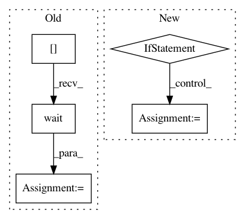

6fe60e43efbac200052a76b0a849c4c7cd4654a5,ilastik/applets/networkClassification/nnClassGui.py,NNClassGui,pred_nn,#NNClassGui#,156
Before Change
// result = self.classifier_factories[classifier_key].predict_probabilities_pixelwise(self.topLevelOperator.InputImage.value, roi, axistags)
self.topLevelOperator.Classifier.setValue(self.classifier_factories[classifier_key])
predict = self.topLevelOperator.CachedPredictionProbabilities[:].wait()
print ("Done")
// numpy.save("/Users/jmassa/Desktop/predictions",predict)
After Change
classifier_key = self.drawer.comboBox.itemText(0)
if len(classifier_key) == 0 :
QMessageBox.critical(self, "Error loading file", "Add a Model first")
else:
expected_input_shape = self.classifiers[classifier_key]._tiktorch_net.expected_input_shape
input_shape = numpy.array(expected_input_shape)
input_shape = input_shape[1:]
input_shape = numpy.append(input_shape,None)
halo_size = self.classifiers[classifier_key].HALO_SIZE
input_shape[1:3] -= 2*halo_size
self.topLevelOperator.BlockShape.setValue(input_shape)
self.topLevelOperator.NumClasses.setValue(3)
self.topLevelOperator.Classifier.setValue(self.classifiers[classifier_key])
//triggers setupLayers for prediction
self.updateAllLayers()
@pyqtSlot()
def handleShowPredictionsClicked(self):
checked = self._viewerControlUi.checkShowPredictions.isChecked()
for layer in self.layerstack:
In pattern: SUPERPATTERN
Frequency: 3
Non-data size: 5
Instances
Project Name: ilastik/ilastik
Commit Name: 6fe60e43efbac200052a76b0a849c4c7cd4654a5
Time: 2018-04-25
Author: jonas.massa@iwr.uni-heidelberg.de
File Name: ilastik/applets/networkClassification/nnClassGui.py
Class Name: NNClassGui
Method Name: pred_nn
Project Name: ilastik/ilastik
Commit Name: 4dddf6c043f45da0318e975593d86ccd920dcb2a
Time: 2013-02-15
Author: kemal.eren@iwr.uni-heidelberg.de
File Name: ilastik/applets/base/appletSerializer.py
Class Name: SerialClassifierSlot
Method Name: _serialize
Project Name: ilastik/ilastik
Commit Name: c7f83e01b01f0c23050b63859dc9c1bf74acbc53
Time: 2013-07-31
Author: webmaster@burgerdev.de
File Name: tests/testOpInterpMissingData.py
Class Name: TestInterpMissingData
Method Name: testDetectorPropagation